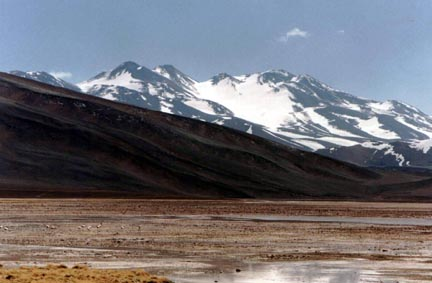
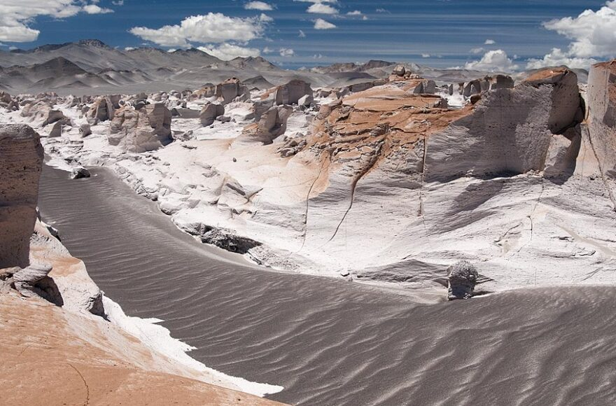
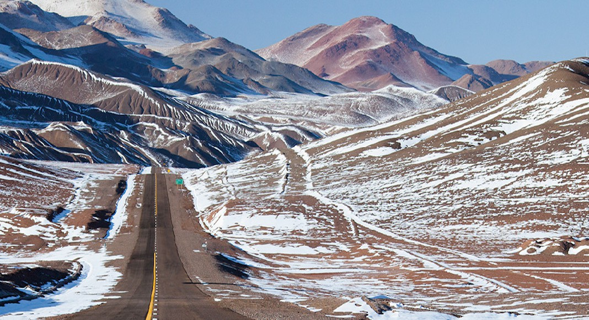

Volcán Muerto, enclavado en el corazón de la Puna de Atacama y limítrofe entre Chile y Argentina, es un gigante muy poco visitado dada su cercanía con el volcán más alto del mundo, el Ojos del Salado, que concita la mayor cantidad de ascensos de la zona. A pesar de ello, representa un duro desafío para quienes intenten alcanzar su punto más alto, debido a sus arenosos faldeos, fuertes pendientes, largas lenguas de nieve y hielo, y el frío y viento característico de la zona. Forma parte de una extensa cadena volcánica donde destacan los cerros San Francisco, Incahuasi, Fraile, Medusa, Ojos del Salado, Solo y el nevado Tres Cruces. Ubicándose al este del Fraile, al noreste del desconocido volcán Medusa y el Ojos del Salado, y acompañado de su vecino inmediato, El Muertito, de 5987m.
El volcán Nacimientos del Cazadero, mal llamado cerro Bayo (o volcán Bayo) catamarqueño (a raíz de un error en las cartas topográficas del Instituto Geográfico Militar de Argentina), es un estratovolcán ubicado en la cordillera Frontal de los Andes, dentro de la provincia argentina de Catamarca aunque a solo unos 25 kilómetros del límite con la región chilena de Atacama. Se trata de uno de los volcanes más elevados de la Tierra. Su cumbre, siempre cubierta de hielos, alcanza los 6.436 msnm. Se halla al sudeste de otro gran complejo volcánico de múltiples cumbres (cráteres) denominado Tipas/Walther Penck, sin embargo son de composiciones geológicas diferentes e independientes.
El nevado Tres Cruces es un macizo de origen volcánico que se encuentra apagado, ubicado en la cordillera de los Andes en la frontera entre la Provincia de Catamarca (Argentina) y la Región de Atacama (Chile). Su extensión es de entre ocho y doce kilómetros en sentido latitudinal y posee cuatro cumbres principales, ordenadas de sur a norte:
Estando ubicado sobre la vertiente sureste de la inactiva Caldera Robertson, el volcán Incahuasi se caracteriza por su estructura principal que se compone de dos conos abiertos que forman una gran caldera de aproximadamente 3,5 kilómetros de diámetro orientada hacia el sur. En su base este es posible hallar otros dos centros eruptivos, uno de los cuales muestra rastros de actividad cercana a dos millones de años, mientras que el otro, ubicado más al norte, representa la última actividad eruptiva de este volcán, hace unos 11000 años. El Incahuasi no presenta muchas ascensiones debido a lo inestable del clima que lo rodea y a la larga aproximación a través del desierto a la que se ve enfrentado el montañista.
El volcán Nacimientos del Cazadero, mal llamado cerro Bayo (o volcán Bayo) catamarqueño (a raíz de un error en las cartas topográficas del Instituto Geográfico Militar de Argentina), es un estratovolcán ubicado en la cordillera Frontal de los Andes, dentro de la provincia argentina de Catamarca aunque a solo unos 25 kilómetros del límite con la región chilena de Atacama. Se trata de uno de los volcanes más elevados de la Tierra. Su cumbre, siempre cubierta de hielos, alcanza los 6.436 msnm. Se halla al sudeste de otro gran complejo volcánico de múltiples cumbres (cráteres) denominado Tipas/Walther Penck, sin embargo son de composiciones geológicas diferentes e independientes. El Nacimientos del Cazadero se ubica en el oeste de la provincia de Catamarca, íntegramente dentro del departamento de Tinogasta y siendo las coordenadas de su cumbre principal (posee al menos 9 cumbres diferenciables)
Con unos 6.437 metros, es el tercero más alto entre los volcanes activos del planeta, y el decimosegundo más alto entre los volcanes no extintos. Es un potente macizo que posee tres cumbres alineadas de oeste a este en una distancia de aproximadamente tres km. La cumbre occidental, más elevada y expuesta a los vientos húmedos provenientes del Océano Pacífico, está cubierta de una capa de nieve permanente. Es el Nevado de Antofalla, con una altura de 6.437 metros. La cumbre del medio tiene 6.329 metros y la del este, 6.375. El volcán domina el largo Salar de Antofalla que se extiende por 163 km en una estrecha cubeta a lo largo, desde el sur-sudoeste hasta el nornoreste. Las aguas de escorrentía del Antofalla han formado un cono de deyección con forma de abanico casi perfecto, al borde de este salar.
El volcán Los Patos es un estratovolcán situado en la frontera de Chile con Argentina, cerca del paso fronterizo San Francisco, entre la Región de Atacama y la Provincia de Catamarca. Cuenta con una altitud de 6239 msnm.
El Volcán Cerro Colorados es una montaña, está entre las que superan la altitud de los 6000 metros en la Región de Antofagasta, el Colorados (o Cerro Colorados) está situado a unos 45 kilómetros de San Pedro de Atacama, mide 6080 metros de altitud y esta a 6080 msnm.
El cerro Solo es un estratovolcán extinto ubicado en la frontera de Chile y Argentina, entre la región de Atacama y la provincia de Catamarca. Es un macizo relativamente desconocido, pues se encuentra escondido entre el nevado Ojos del Salado y el nevado Tres Cruces. Cuenta con una altitud de 6205 msnm.